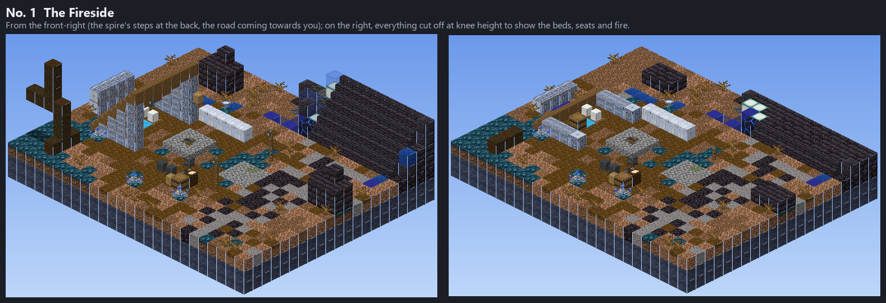
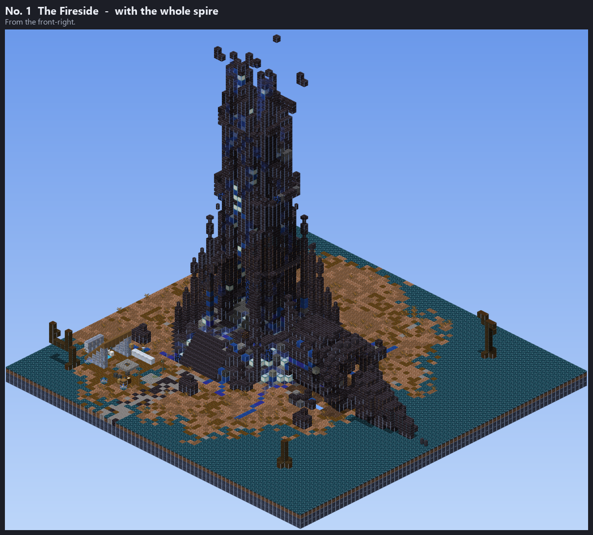
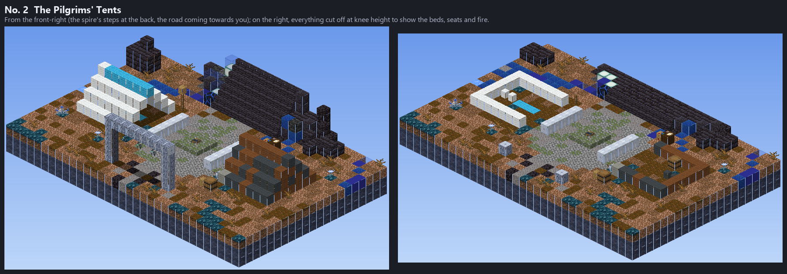
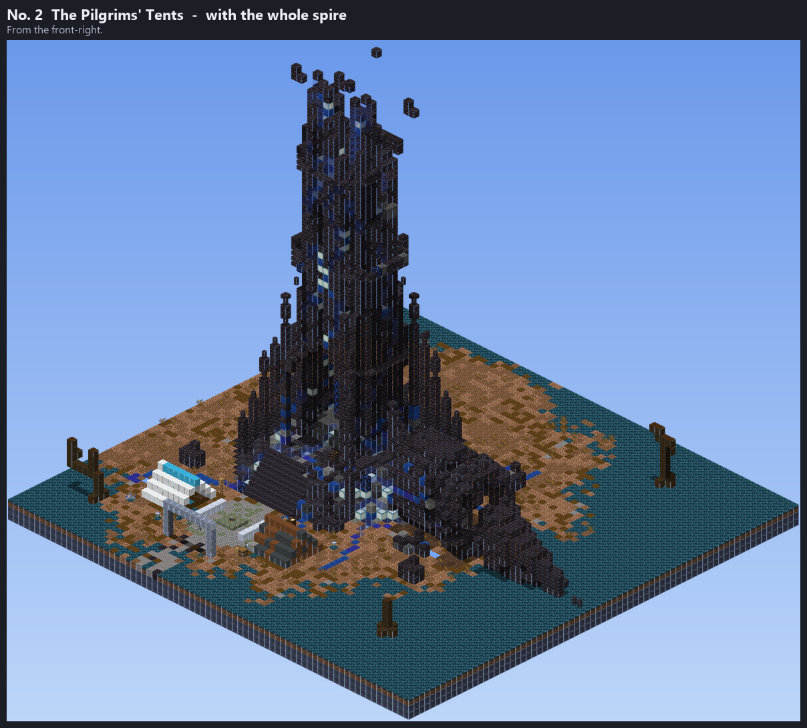
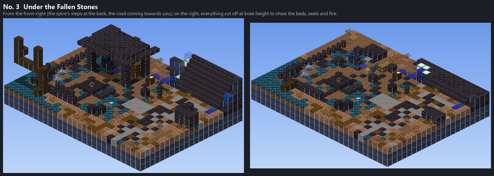
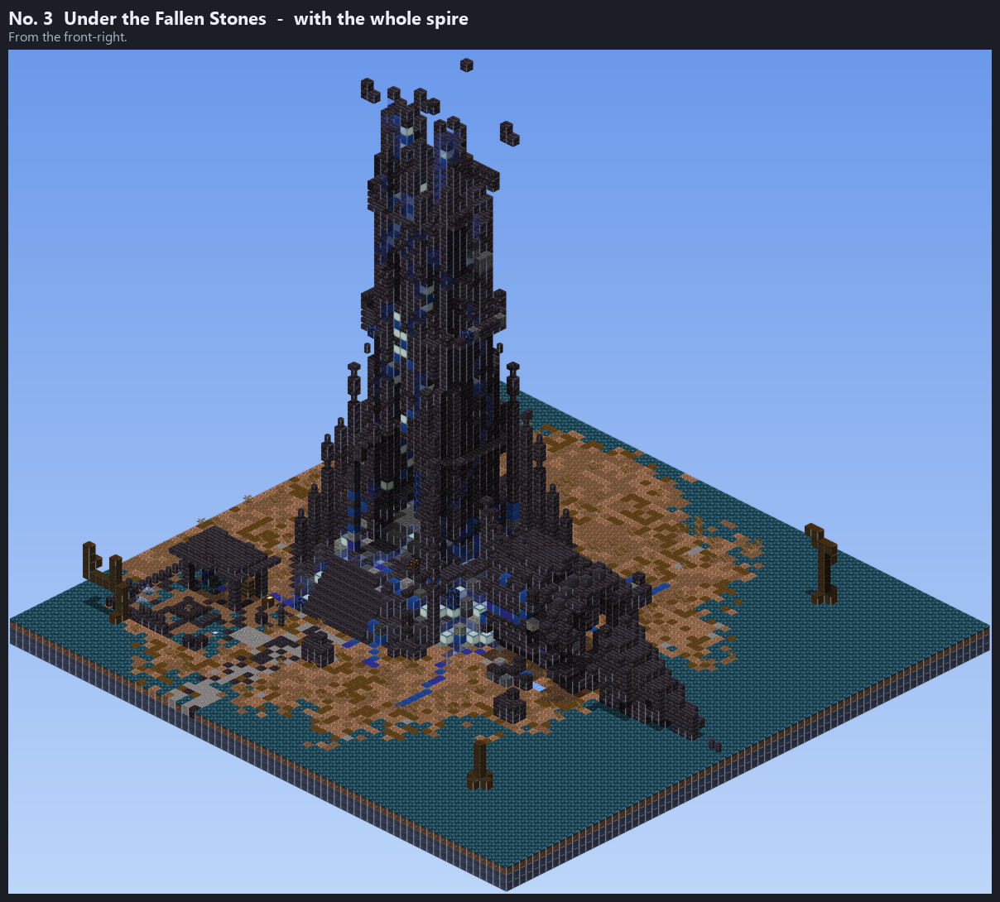

At the foot of the Shattered Spire's front steps (the Dross hub). The Blind Oracle (the master) and the Ragged Seeker (his student) will live here.
A lean-to of silverwood beside the road, open to a stone-ringed fire. The Oracle sleeps under its roof (white bed, blue rug, candles, a blue banner); the Seeker's bedroll lies by the fire with his map table, chest and pack. Soul lanterns on posts mark it from the road.


A small stone plaza at the foot of the steps with the fire in its middle and the road going round it. Two tents face each other across it: the Oracle's white one with a blue ridge, candles and a blue banner, and the Seeker's patched brown one, with his map table, lectern and a planted Moonsilver Spear outside. A lantern arch over the road marks the camp.


Beside the steps, under a slab of the spire's broken crown laid over four broken pillars, behind a windbreak of fallen masonry. The Oracle sits on a stone seat facing the road, a shard of a Dross frame behind him humming and leaking blue dust; the Seeker sleeps among salvaged crates. A blue soul fire burns in front.

